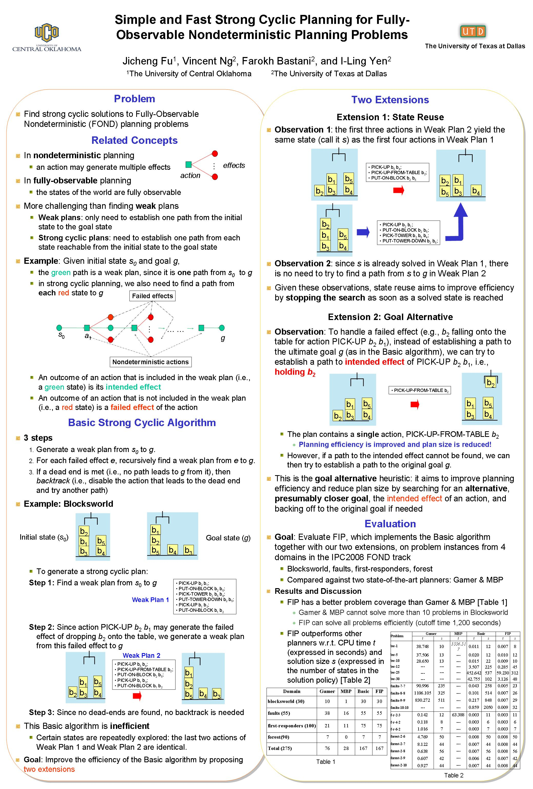

Simple and Fast Strong Cyclic Planning for Fully-Observable Nondeterministic Planning Problems
Jicheng Fu, Vincent Ng, Farokh B. Bastani, and I-Ling Yen.
Proceedings of the 22nd International Joint Conference on Artificial Intelligence, pp. 1949-1954, 2011.
Click here for the
PostScript or PDF
version.
The talk slides are available here.
Abstract
We address a difficult, yet under-investigated class of planning problems:
fully-observable nondeterministic (FOND) planning problems with strong cyclic
solutions. The difficulty of these strong cyclic FOND planning problems stems
from the large size of the state space. Hence, to achieve efficient planning,
a planner has to cope with the explosion in the size of the state space by
planning along the directions that allow the goal to be reached quickly.
A major challenge is: how would one know which states and search directions
are relevant before the search for a solution has even begun? We first
describe an NDP-motivated strong cyclic algorithm that, with addressing
the above challenge, can already outperform state-of-the-art FOND planners,
and then extend this NDP-motivated planner with a novel heuristic that
addresses the challenge.
BibTeX entry
@InProceedings{Fu+etal:11a,
author = {Jicheng Fu and Vincent Ng and Farokh B. Bastani and I-Ling Yen},
title = {Simple and Fast Strong Cyclic Planning for Fully-Observable Nondeterministic Planning Problems},
booktitle = {Proceedings of the 22nd International Joint Conference on Artificial Intelligence},
pages = {1949--1954},
year = 2011
}
